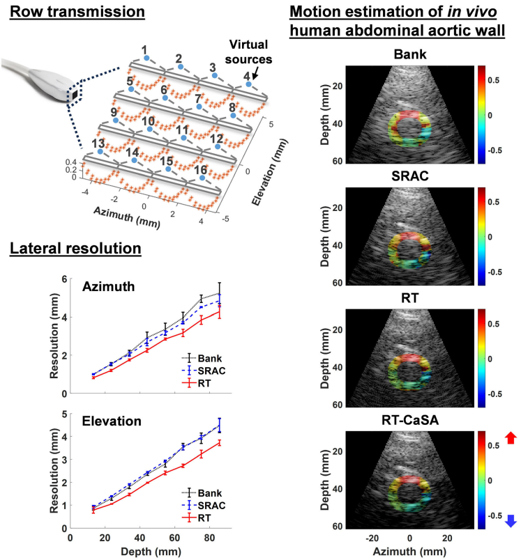
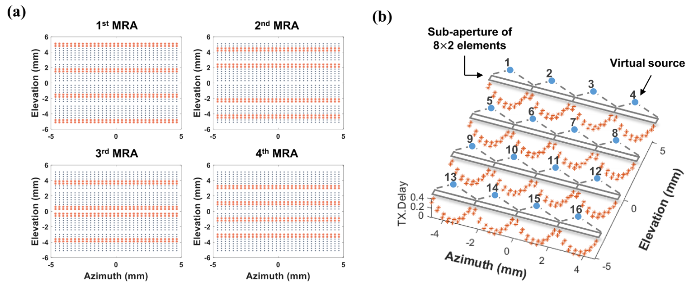
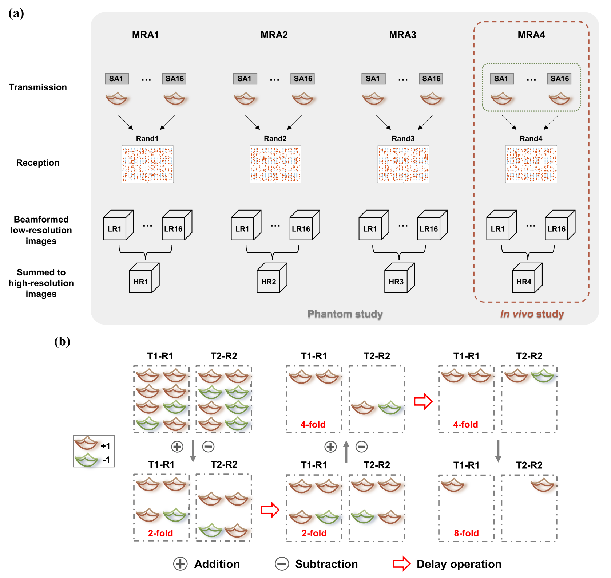
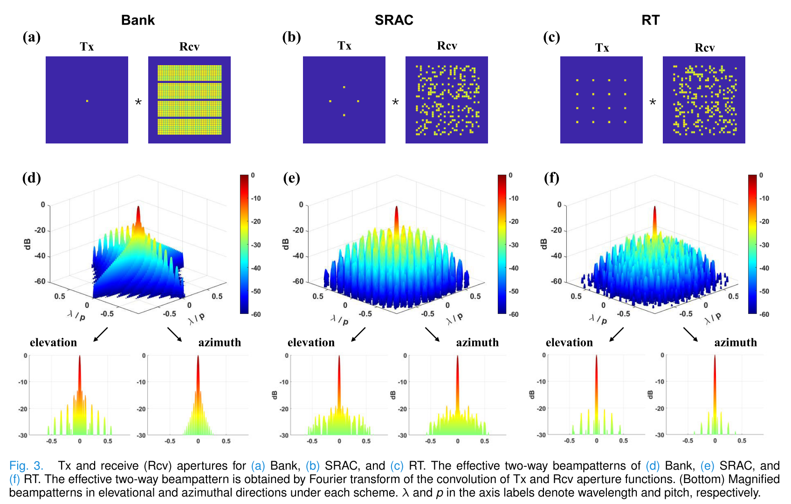
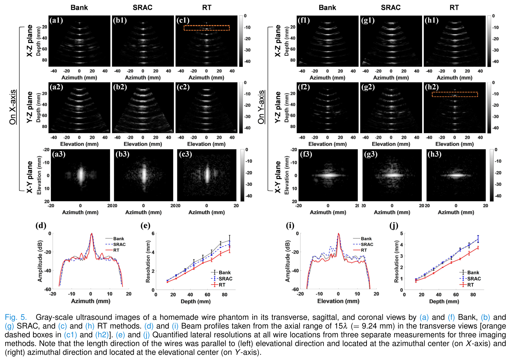

文献周报25.04.1
总述
本周阅读主题：超声三维容积成像
1. 基于面阵换能器的高帧率三维容积超声成像行发射
2025-3-24
文章概要
Row Transmission for High Volume-Rate Ultrasound Imaging With a Matrix Array
DOI: 10.1109/TUFFC.2024.3396269
Vermon 1024阵元的矩阵换能器中，所有的阵元分为4个bank，每一个bank是一个32x8的阵列。相邻的两个bank之间存在一个空行。空行的存在会影响elevation方向上的空间分辨率和图像质量，如下图所示。为了解决这一问题，本文提出了一种“行发射”成像方法，以提升三维容积成像时的空间分辨率。具体来说，将换能器沿azimuth方向划分为4个子孔径（这样整个换能器被划分为了16个子孔径，每一个子孔径中包含8x8个阵元）。每一个子孔径被进一步划分，从而激励产生发散声波。在azimuth方向上实施相干发散声波复合成像。同时在elevation方向上实施多阵元合成孔径成像。进一步地，in-house时空编码策略被用于和合成孔径成像共同使用，以改善成像的信噪比。作者将本文的方法和传统的各个Bank逐个激励的方法以及稀疏发射方法对比，本文方法在空间分辨率上体现出了一定的优势。
本文还有一个前提，全矩阵设备只具有256个通道。实际上本文是在这一假设下设计了一种发射和接收的策略。传统方法自然是每次激励一个bank或者在整个探头中随机选择256个通道（随机稀疏）。

具体的发射模式如下图所示

可以看到，整个32x32的阵列首先被划分为16个8x8的阵列。每一次发射过程中，激励每个8x8阵列中的8x2个阵元，在azimuth方向上实施发散声波成像（也即虚拟源全聚焦成像）。此外，由于Vantage仪器只有256个接收通道，因此接收时随机选通256个通道。
在上述发射接收模式的基础上，进一步实施了时空编码技术。

最终得到的换能器阵列的空间响应如下图所示

最后是所述方法的成像结果
